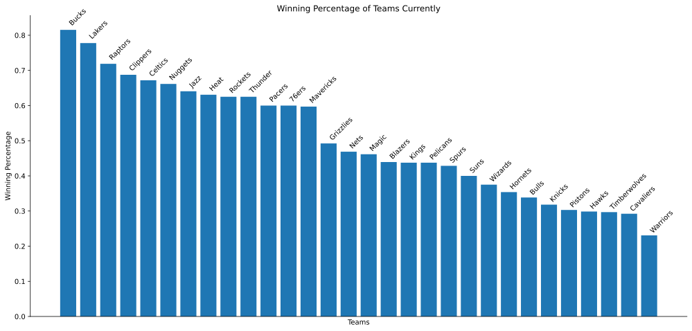

Acknowledgements
For Standings
https://www.basketball-reference.com/leagues/NBA_2020_standings.html
For Team Stats
https://www.basketball-reference.com/leagues/NBA_2020.html
Before
Here is some feedback we have for your plot and accompanying text:
Overall the plot looks pretty good. I like your idea of using past data and data from the current unfinished season to predict what could have happened if it were to have played out.
Here are some things you could do to improve your plot:
- Label the x and y axis (and don't forget units when necessary)
- Get rid of the numbers (0,5,10,15...) on the x-axis because those are not needed
- Add a title, make sure to specify what year the data is from too
- Turn the team name at the top of each bar sideways or horizontal so they don't overlap, and make the name bigger so it's easier to read
- OR move the team names to be underneath the bars underneath the x-axis
Here are some things you could add to improve your accompanying text:
- Explain what win percentage is and how you found that statistic
- How you will use past data to extrapolate future data?
- Are there other statistics that might help explain why certain teams have a higher win percentage than others? What other patterns in the data can you find?
After
